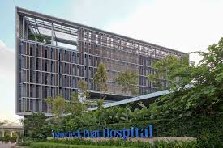

National Healthcare Group
 90 Yishun Central
Singapore 768828
Singapore
Khoo Teck Puat Hospital (Abbreviation: KTPH) is a 795-bed general and acute care hospital located at Yishun in Singapore. Named after Singaporean hotelier, Khoo Teck Puat, the hospital is part of an integrated development together with the adjoining Yishun Community Hospital. The hospital was officially opened by Minister Mentor Lee Kuan Yew on 15 November 2010, but began seeing outpatients and day surgery patients on 28 March that year. Spanning over 3.5 hectares (8.6 acres) in the Yishun Central Area overlooking the scenic Yishun Pond. The hospital offers an extensive range of medical services and healthcare options for residents living in the north. As of October 2017, KTPH merged with the National Healthcare Group and is now known as Yishun Health, together with Yishun Community Hospital and Admiralty Medical Centre.
In 2001, plans were announced that a new hospital, the Jurong General Hospital, will be built and will replace the current Alexandra Hospital. The hospital was slated to be completed by 2006. However, in 2004, the plan was scrapped. Instead, the next new public hospital will be built in the north at Yishun and be completed by 28 March 2010.
On 28 November 2006, Alexandra Hospital marked the first milestone for its new hospital with a groundbreaking ceremony at the new hospital site. The guest-of-honor was then Health Minister Khaw Boon Wan. An exhibition titled "Metamorphosis: From Old to New" was held at the same time, showcasing photographs depicting the transformation of the existing hospital building in Alexandra Road from pre- and post-independence years to the present times. 3-dimensional models and perspectives of the new hospital building were also on display.
On 16 May 2007, Health Minister Khaw Boon Wan, while attending the HIMSS AsiaPac 2007 conference, announced that the new general hospital in Yishun has been named Khoo Teck Puat Hospital. In acknowledgement of the S$125 million donation made by the late hotelier's Khoo Teck Puat family towards building and funding of the hospital, instead of the previously planned name Alexandra @ Yishun.
On 30 September 2007, Health Minister Khaw, at a community event in Yishun, noted that additional land parcels set aside around the Khoo Teck Puat Hospital could be used for construction of further, more specialised health-care facilities. Beyond 2020, this might eventually create a health-care cluster similar to the diverse facilities now in the vicinity of Singapore General Hospital, providing high-quality healthcare services to the growing population in the north. Possible inclusions in the cluster are a community hospital and medical-tourist hotels.
The hospital's specialist outpatient clinics and day surgery operating theatres opened on 29 March 2010. The initial timeline was delayed by about three months because of the Indonesian sand ban and disruption to granite supplies. This forced contractors to bring in more equipment and workers to make up for the time lost.
The facility's inpatient wards and acute care and emergency department began operation on 28 June 2010.
In 2015, Muhammad Iskandar Sa’at, a suspect arrested for motor theft, was being evaluated at KTPH for chest pain while under custody. When one of the two officers accompanying him left the room to break fast, Iskandar assaulted the remaining police officer and fired the officer's firearm before Iskandar was subdued, injuring the officer's left thumb and right foot. Iskandar was initially charged for an unlawful discharge of a firearm under the Arms Offences Act, which carries the mandatory death penalty,[8] but the charge was reduced to an unlawful possession of a firearm for causing hurt to a public servant, which carries a mandatory life sentence. Iskandar pleaded guilty to the reduced charge, and was sentenced to life imprisonment and 18 strokes of the cane.
The Khoo Teck Puat Hospital was designed by CPG Consultants in collaboration with RMJM to be patient-friendly. The 10-bedded "C"-class wards is divided into two sections, each with its own toilet and shower facilities. There is only one drop-off point for the hospital and the distance from it to the emergency department is only 20 metres, while the distance to the specialist clinics is between 20 and 40 metres. There are no protruding sinks or cupboards in the wards so patients are less likely to hurt themselves.
The hospital also incorporates environmentally friendly features. The building uses 30% less energy than other older hospitals such as Tan Tock Seng Hospital, Changi General Hospital and Kandang Kerbau Women's and Children's Hospital, a savings of more than S$1 million a year on utilities costs.
"Fins" along the building's walls are designed to channel the prevailing north-east winds into the building. Wind tunnel tests conducted at the National University of Singapore found that the "fins" would enhance the air flow by 20 to 30%. Sunshades over the windows protect patients from the direct glare of sunlight. The shades also re-direct light towards the ceiling to enhance the brightness of the wards and save on the use of energy. Large fans in public areas are powered by solar panels on the roof. The air-conditioning system draws supply air from its internal courtyards, where the air is cooler, hence reducing the cooling loads.

To find out more about KTPH,
Visit KTPH Homepage!